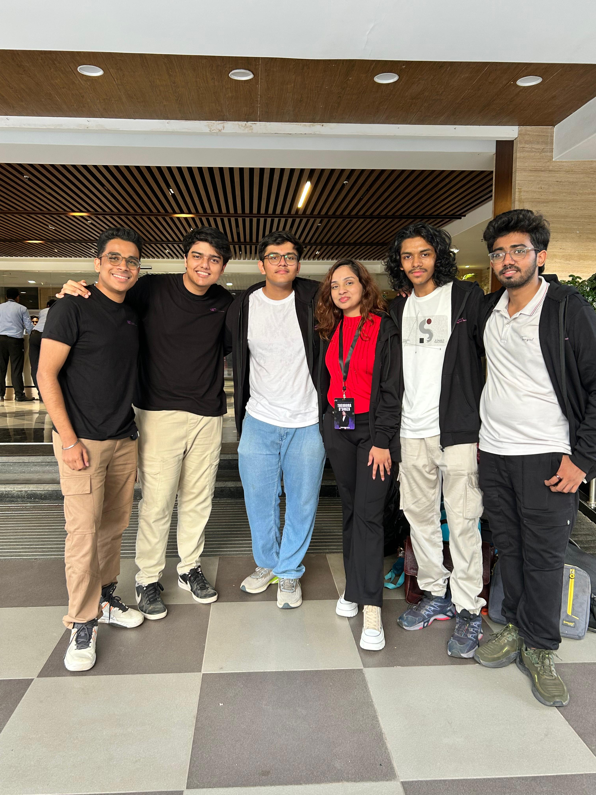
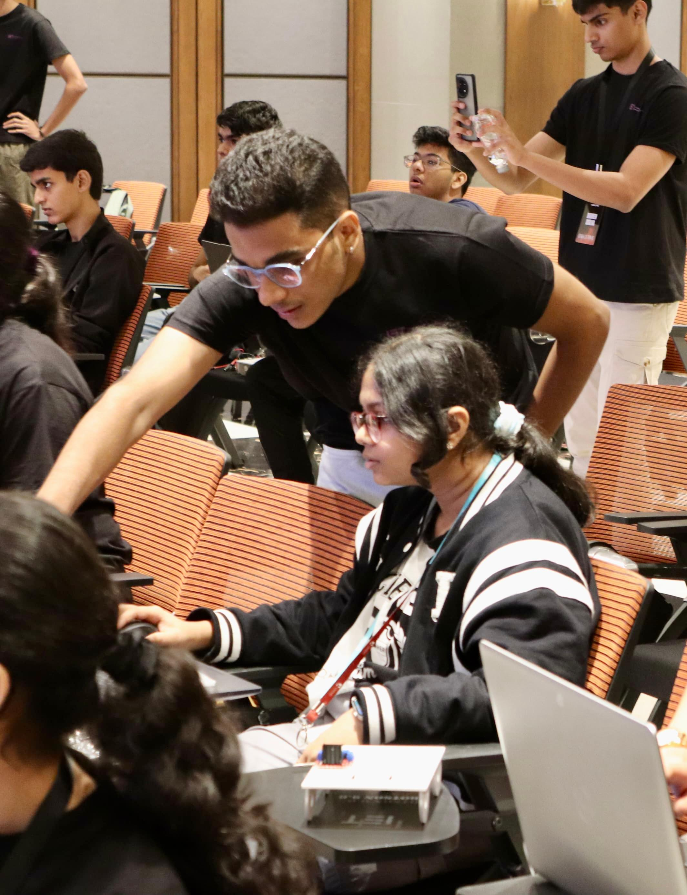
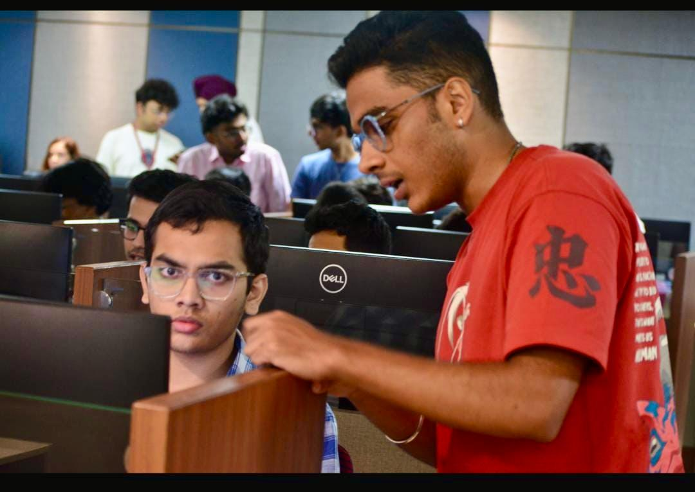
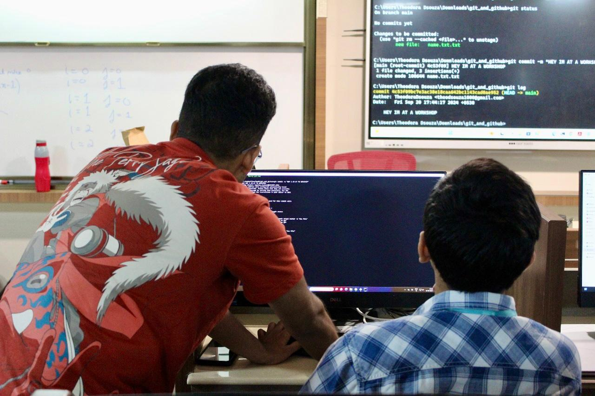
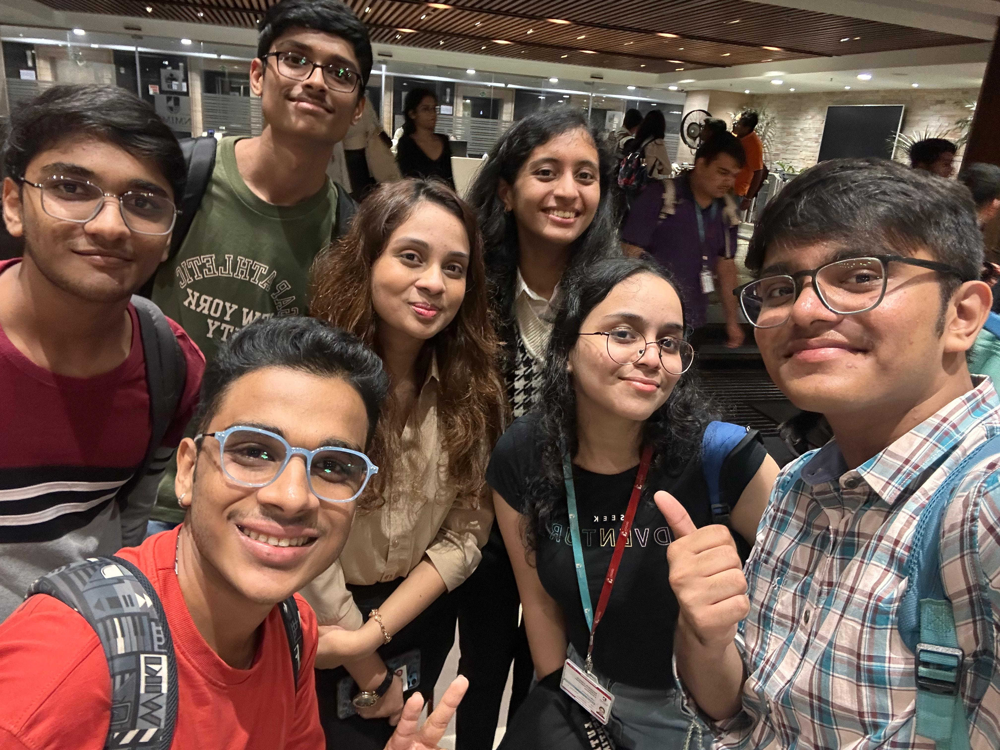

Statement of Purpose
Technical Skills
Programming Languages
Python
Java
JavaScript
Node.js
MySQL
C++
Git
HTML
CSS
Experience
2024 - 2025
Teacher
We can We will Foundation
- Taught core subjects to underprivileged students through regular volunteer sessions
- Conducted a beginner-friendly web development course (HTML & CSS) for 11th-grade students
- Created simplified teaching methods to improve tech and academic understanding
2024-2025
Technical Executive
IET
2023-2024
Technical Executive
ACM
2022-2023
Photography Executive
IEC
Projects
▸ Margin Detection
A computer vision project that detects margins in documents and images using advanced image processing techniques.
Python
OpenCV
EasyOCR
▸ Portfolio Website
A responsive personal portfolio website showcasing skills, projects, and achievements with modern design principles.
HTML
Tailwind CSS
JavaScript
Three.js
Node.js
MySQL
▸ Quiz App
An interactive quiz application with multiple categories, scoring system, and real-time feedback.
JavaScript
Node.js
MySQL
▸ Diet and Exercise Recommendation
A personalized health and fitness application that provides customized diet plans and exercise routines based on user profiles.
Python
Machine Learning
Contributions





My Contributions
A comprehensive overview of my key contributions and achievements:
-
Github and Python Workshop:
Actively assisted participants in the GitHub & Python Workshop by debugging code, resolving issues, and offering one-on-one guidance to ensure smooth learning. -
Botson:
Contributed extensively to the preparation phase of Botson and helping participants build bots during the event through hands-on support and troubleshooting. -
Codechella:
Served as a moderator for Codechella, coordinating between teams and maintaining smooth event flow throughout.
Additional Contributions
- Assisted in implementing improvements and updates to the IET committee website
- Helped maintain a friendly, approachable, and chill atmosphere within the department
Key Achievements
- Provided continuous support across all major technical events
- Helped participants overcome real-time technical challenges
- Ensured successful execution of all events with hands-on involvement